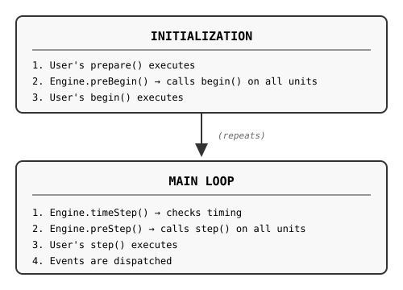

Extending Plaquette
This guide provides comprehensive instructions for developers who want to extend Plaquette by creating custom units. Whether you’re building a specialized sensor interface, a custom filter, or an advanced signal generator, this document covers everything you need to know.
Architecture Overview
Plaquette is built around a signal-centric programming model where data flows between components. The framework provides:
Automatic unit registration: Units register themselves with their Engine upon construction
Synchronized updates: All units are updated together in each execution step
Flow operators: The
>>operator chains components for intuitive data routing
Core Components
Component |
Description |
|---|---|
Engine |
Central orchestrator that manages all units, timing, and execution |
Flowable |
Base interface for all signal components. Provides |
Unit |
Base class for engine-managed components with lifecycle methods |
Note
All Flowables (including Units) can be used directly as values in expressions:
float v = sensor; // get() called implicitly
if (button) { ... } // true when isOn()
Serial.println(filter); // prints current value
Execution Model
Plaquette replaces Arduino’s setup()/loop() with begin()/step():
{kind=link}

The pq Namespace
All Plaquette classes and functions are defined within the pq namespace. This prevents naming
conflicts with other libraries and the Arduino core. When writing extension code (header and
implementation files), you should place your code inside the pq namespace:
// MyUnit.h
#include "PqCore.h"
namespace pq {
class MyUnit : public Unit {
// ...
};
} // namespace pq
Note
If you’re writing a standalone library that extends Plaquette but don’t want to pollute
the global namespace, you can use pq:: prefixes explicitly or add
using namespace pq; only where needed.
Flowable vs Unit: Choosing Your Base Class
This is the most important decision when creating a custom component. Plaquette provides two fundamentally different base classes:
Flowable: Non-Engine-Managed Components
Subclass Flowable when:
Your component does NOT need to be managed by an engine
You do NOT need per-frame updates (
step())You do NOT need initialization hooks (
begin())You do NOT need access to engine timing (sample rate, elapsed time)
Your component can operate independently of the engine lifecycle
Characteristics of Flowable subclasses:
NOT registered with any Engine
NO
begin()orstep()methodsImplement
get()andput()for flow operator compatibilityCompatible with Plaquette syntax
Lightweight with no engine management overhead
Examples:
Float,Boolean,Integer(value wrappers), custom transformers
Example: Clamped Value
#include "PqCore.h"
namespace pq {
/// A value that stays within [min, max] bounds.
class ClampedValue : public Flowable {
public:
ClampedValue(float min = 0.0f, float max = 1.0f)
: _value(0), _min(min), _max(max) {}
float get() override {
return _value;
}
float put(float value) override {
_value = constrain(value, _min, _max);
return _value;
}
private:
float _value;
float _min;
float _max;
};
} // namespace pq
Usage:
ClampedValue clamped(0.0, 100.0);
sensor >> clamped >> output; // Values automatically clamped
// Also works with Plaquette syntax:
float v = clamped; // Uses operator float()
if (clamped) { ... } // Uses operator bool()
Unit: Engine-Managed Components
Subclass Unit (or its descendants) when:
Your component needs to be managed by an engine
You need per-frame updates via
step()You need initialization via
begin()You need access to engine timing (
seconds(),sampleRate(),samplePeriod())You interact with hardware (sensors, actuators)
You implement time-based behavior (oscillators, timers, filters)
You need event callbacks
Characteristics of Unit subclasses:
Automatically registered with an Engine upon construction
MUST accept an
Engine¶meter in ALL constructors (defaulting to primary engine)Have
begin()andstep()lifecycle methodsAccess to synchronized timing information via engine
Can register event callbacks
Decision Flowchart
Does your component need...
│
├── Per-frame updates (step)?
│ └── YES → Use Unit
│
├── Initialization (begin)?
│ └── YES → Use Unit
│
├── Access to synchronized time (seconds, sampleRate)?
│ └── YES → Use Unit
│
├── Event callbacks?
│ └── YES → Use Unit
│
└── None of the above, just flow compatibility?
└── YES → Use Flowable
Comparison Table
Feature |
Flowable |
Unit |
|---|---|---|
Engine registration |
× |
✓ (automatic) |
|
× |
✓ |
|
× |
✓ |
Synchronized timing |
× |
✓ |
Event callbacks |
× |
✓ |
Flow operators ( |
✓ |
✓ |
|
✓ |
✓ |
|
✓ |
✓ |
Memory overhead |
Minimal |
Engine tracking |
Use case |
Standalone components |
Engine-managed components |
Class Hierarchy
Complete Hierarchy
Flowable (interface - NOT engine-managed)
│
├── Value<T> (Float, Boolean, Integer - NOT engine-managed)
│
└── Unit (base class - engine-managed)
│
├── DigitalUnit (boolean on/off units)
│ │
│ └── DigitalSource (with change detection)
│
└── AnalogSource (values in [0, 1] range)
Flowable
The foundational interface for all chainable components:
class Flowable {
public:
virtual float get(); // Read current value
virtual float put(float value); // Write value (default: read-only)
virtual float mapTo(float toLow, float toHigh); // Map value to range
operator float(); // Implicit conversion to float
explicit operator bool(); // Explicit conversion to bool
};
Unit
The base class for all engine-managed components:
class Unit : public Flowable {
protected:
virtual void begin(); // Called once after all units are registered
virtual void step(); // Called every frame in the main loop
public:
// IMPORTANT: Constructor MUST accept Engine reference
Unit(Engine& engine = Engine::primary());
// Access engine-synchronized timing
float seconds() const;
uint32_t milliSeconds() const;
uint64_t microSeconds() const;
unsigned long nSteps() const;
float sampleRate() const;
float samplePeriod() const;
// Event support
virtual void onEvent(EventCallback callback, EventType eventType);
};
DigitalUnit
Base for boolean (on/off) units:
class DigitalUnit : public Unit {
public:
DigitalUnit(Engine& engine = Engine::primary());
virtual bool isOn();
virtual bool isOff();
virtual int getInt(); // Returns 0 or 1
virtual float get(); // Returns 0.0 or 1.0
virtual bool on(); // Turn on
virtual bool off(); // Turn off
virtual bool putOn(bool value); // Set state (override for writable units)
};
DigitalSource
Digital unit with change detection and events:
class DigitalSource : public DigitalUnit {
public:
DigitalSource(Engine& engine = Engine::primary());
virtual bool rose(); // True if just changed from off to on
virtual bool fell(); // True if just changed from on to off
virtual bool changed(); // True if state changed this step
// Event callbacks
virtual void onRise(EventCallback callback);
virtual void onFall(EventCallback callback);
virtual void onChange(EventCallback callback);
};
AnalogSource
Base for units outputting normalized values in [0, 1]:
class AnalogSource : public Unit {
public:
AnalogSource(Engine& engine = Engine::primary());
AnalogSource(float initialValue, Engine& engine = Engine::primary());
virtual float get(); // Returns _value (always in [0, 1])
protected:
float _value; // Must stay in [0, 1] range
};
Unit Lifecycle
Every unit follows a predictable lifecycle managed by the Engine.
Construction and Engine Registration
Warning
All Unit subclasses MUST accept an Engine& parameter in every constructor, defaulting to the primary engine.
Header file (.h): Declare the default value here:
class MyUnit : public AnalogSource {
public:
MyUnit(Engine& engine = Engine::primary());
MyUnit(float param, Engine& engine = Engine::primary());
MyUnit(float param1, float param2, Engine& engine = Engine::primary());
// ...
};
Implementation file (.cpp):
MyUnit::MyUnit(Engine& engine)
: AnalogSource(engine)
{ }
MyUnit::MyUnit(float param, Engine& engine)
: AnalogSource(engine), _param(param)
{ }
MyUnit::MyUnit(float param1, float param2, Engine& engine)
: AnalogSource(engine), _param1(param1), _param2(param2)
{ }
Caution
Never provide constructors without an Engine& parameter.
In header:
// WRONG: Missing engine parameter
MyUnit(float param);
Core abstract classes Unit, DigitalUnit, DigitalSource and AnalogSource
deliberately do NOT provide a default engine at construction. This causes a compilation
error if you forget the engine parameter - a safety feature that catches mistakes early.
Caution
Always pass the engine to the parent class.
When subclassing units whose constructors provide a default engine, forgetting to pass the engine breaks multi-engine setups silently:
// WRONG: Missing parent initializer - defaults to primary engine, ignoring parameter
MyUnitSubClass::MyUnitSubClass(Engine& engine)
{ }
// WRONG: Same problem - engine parameter is ignored
MyUnitSubClass::MyUnitSubClass(float param, Engine& engine)
: MyUnit(param)
{ }
// CORRECT: Always pass the engine to the parent class
MyUnitSubClass::MyUnitSubClass(float param, Engine& engine)
: MyUnit(param, engine)
{ }
Why is this important?
Users may want to assign units to secondary engines
The engine parameter must ALWAYS be the LAST parameter
Forgetting to pass the engine breaks multi-engine setups silently
// User can assign to different engines:
Engine slowEngine;
MyUnit unit1; // Uses primary engine (default)
MyUnit unit2(0.5); // Uses primary engine (default)
MyUnit unit3(0.5, slowEngine); // Uses secondary engine
begin()
Called once after all units are registered, before the main loop:
void MyUnit::begin() {
// Initialize state
// Read initial sensor values
// Set up hardware
}
step()
Called once per frame in the main loop:
void MyUnit::step() {
// Update internal state
// Read sensors / write actuators
// Cache computed values for get()
}
Timing Access
Inside any unit method, you have access to engine-synchronized timing information.
Warning
Always use the unit’s timing methods instead of global Arduino functions like millis() or micros(). The unit’s timing methods are synchronized with its engine, ensuring consistent behavior especially when using multiple engines with different sample rates.
void MyUnit::step() {
// CORRECT: Use engine-synchronized timing
float t = seconds(); // Time since engine start (seconds)
float dt = samplePeriod(); // Time since last step (seconds)
float rate = sampleRate(); // Steps per second
unsigned long n = nSteps(); // Number of steps executed
// WRONG: Don't use global Arduino timing functions
// unsigned long t = millis(); // Not synchronized with engine!
// unsigned long t = micros(); // Not synchronized with engine!
}
Why use engine timing?
Engine timing is synchronized with the unit’s step cycle
Different engines can run at different sample rates
Consistent timing even when using secondary engines
Proper handling of sample rate changes
Step-Invariance Principle
The step-invariance principle applies to source units (units whose put(float) is
inactive or not overridden). For these units, get() should return a constant value
throughout a step.
Sink and filter units (units that accept input via put(float)) are different:
their value can change during a step when put() is called. This is expected and
correct behavior.
When Step-Invariance Applies
Unit Type |
|
Step-Invariance |
|---|---|---|
Source (sensor, generator) |
Inactive / not overridden |
|
Sink (output, actuator) |
Accepts input, stores for |
|
Filter (transformer) |
Accepts input, transforms immediately |
|
For source units, the principle ensures:
get() returns a constant value throughout a step
Hardware reads only occur in step() (never in
get())Values are cached and returned consistently until next step
Flow Operators
The >> operator enables intuitive signal chaining:
sensor >> filter >> output;
// Equivalent to: output.put(filter.put(sensor.get()));
How It Works
// Float to flowable
inline float operator>>(float value, Flowable& unit) {
return unit.put(value);
}
// Flowable to flowable
inline float operator>>(Flowable& source, Flowable& sink) {
return sink.put(source.get());
}
Making Your Component Flow-Compatible
Both Flowable and Unit subclasses are automatically flow-compatible if they implement
get() and/or put():
// Flowable subclass (no engine)
class MyTransformer : public Flowable {
public:
float get() override { return _value; }
float put(float value) override {
_value = transform(value);
return _value;
}
private:
float _value;
float transform(float v) { return v * v; }
};
// Unit subclass (with engine)
class MyUnit : public AnalogSource {
public:
MyUnit(Engine& engine = Engine::primary()) : AnalogSource(engine) {}
float get() override { return _value; }
float put(float value) override {
_value = constrain01(value);
return _value;
}
};
// Both work with flow operators:
sensor >> myTransformer >> myUnit >> output;
Creating Your First Unit
Let’s create a simple unit step by step.
Step 1: Choose Your Base Class
If your component… |
Inherit from |
|---|---|
Doesn’t need engine management (no timing, no step) |
|
Outputs values in [0, 1] (sensors, oscillators, filters) |
|
Outputs boolean on/off states |
|
Outputs boolean with change detection (buttons, triggers) |
|
Has custom value range or complex behavior |
|
Step 2: Create the Header File
// RandomWalk.h
#ifndef RANDOM_WALK_H_
#define RANDOM_WALK_H_
#include "PqCore.h"
namespace pq {
/**
* Generates a smooth random walk in [0, 1].
*
* The value drifts randomly at each step, scaled by the rate
* parameter and the engine's sample period. Use put() to hard
* reset to a specific value.
*/
class RandomWalk : public AnalogSource {
public:
/**
* Constructor with default rate.
* @param engine the engine running this unit
*/
RandomWalk(Engine& engine = Engine::primary());
/**
* Constructor with specified rate.
* @param rate maximum change per second (default: 0.5)
* @param engine the engine running this unit
*/
RandomWalk(float rate, Engine& engine = Engine::primary());
virtual ~RandomWalk() {}
/// Sets the rate of change per second.
void rate(float rate);
/// Returns the current rate.
float rate() const { return _rate; }
/// Returns a ParameterSlot for dynamic rate modulation.
ParameterSlot<RandomWalk> Rate() {
return ParameterSlot<RandomWalk>(this, &RandomWalk::rate, &RandomWalk::rate);
}
/**
* Hard resets the random walk to a specific value.
* @param value the value to reset to (clamped to [0, 1])
* @return the new value
*/
virtual float put(float value) override;
protected:
virtual void begin() override;
virtual void step() override;
private:
float _rate;
};
} // namespace pq
#endif // RANDOM_WALK_H_
Step 3: Create the Implementation File
// RandomWalk.cpp
#include "RandomWalk.h"
namespace pq {
RandomWalk::RandomWalk(Engine& engine)
: AnalogSource(engine), // Pass engine to parent
_rate(0.5f) // Default rate: 0.5 units/second
{
// Unit is automatically registered with engine
}
RandomWalk::RandomWalk(float rate, Engine& engine)
: AnalogSource(engine), // Pass engine to parent
_rate(rate)
{
// Unit is automatically registered with engine
}
void RandomWalk::begin() {
// Initialize to center position
_value = 0.5f;
}
void RandomWalk::step() {
// Compute random delta scaled by rate and sample period.
// randomFloat(-1, 1) gives uniform random in [-1, 1].
// Multiplying by rate and samplePeriod() makes the walk
// time-consistent regardless of sample rate.
float delta = randomFloat(-1.0f, 1.0f) * _rate * samplePeriod();
// Apply delta and constrain to [0, 1]
_value = constrain01(_value + delta);
}
void RandomWalk::rate(float rate) {
_rate = max(rate, 0.0f); // Rate must be non-negative
}
float RandomWalk::put(float value) {
// Hard reset: immediately set value (bypass random walk)
_value = constrain01(value);
return _value;
}
} // namespace pq
Step 4: Use Your Unit
#include <Plaquette.h>
#include "RandomWalk.h"
using namespace pq;
RandomWalk wanderer(0.3); // Slow drift: 0.3 units/second max
AnalogOut led(LED_BUILTIN);
DigitalIn button(2);
SineWave lfo(20.0); // Slow LFO for rate modulation
void step() {
// Modulate rate dynamically via ParameterSlot
lfo >> wanderer.Rate();
// LED brightness follows random walk
wanderer >> led;
// Button press resets walk to minimum
if (button.rose())
0 >> wanderer;
}
// Or with a secondary engine:
Engine slowEngine;
RandomWalk slowWanderer(0.1, slowEngine); // Assigned to secondary engine
Unit Templates
The following templates show common patterns. All Unit subclasses must include
Engine& engine = Engine::primary() as the last parameter in every constructor.
Source Unit (Generator)
For units that generate values (step-invariant):
class MyGenerator : public AnalogSource {
public:
MyGenerator(float frequency, Engine& engine = Engine::primary())
: AnalogSource(engine), _frequency(frequency) {}
protected:
void step() override {
float t = seconds(); // Use engine timing, not millis()!
_value = /* compute value in [0, 1] */;
}
private:
float _frequency;
};
Filter Unit
For units that transform incoming signals:
class MyFilter : public AnalogSource {
public:
MyFilter(float strength, Engine& engine = Engine::primary())
: AnalogSource(engine), _strength(strength) {}
float put(float value) override {
_value = constrain01(applyFilter(value));
return _value;
}
private:
float _strength;
float applyFilter(float v) { return v * _strength; }
};
Digital Trigger Unit
For units that detect events (inherits rose(), fell(), changed()):
class MyTrigger : public DigitalSource {
public:
MyTrigger(float threshold, Engine& engine = Engine::primary())
: DigitalSource(engine), _threshold(threshold) {}
float put(float value) override {
_currentValue = value;
return get();
}
protected:
void step() override {
_onValue = (_currentValue >= _threshold);
_updateChangeState(); // Updates rose/fell/changed
}
private:
float _threshold;
float _currentValue;
};
Parameter Slots
Parameter slots allow dynamic control of unit properties via flow operators:
Wave lfo(10.0);
Wave carrier(0.5);
void step() {
lfo >> carrier.Frequency(); // LFO modulates carrier frequency
}
Implementing Parameter Slots
Use the ParameterSlot template to expose parameters:
// In your header
#include "PqCore.h"
class MyOscillator : public AnalogSource {
public:
MyOscillator(Engine& engine = Engine::primary())
: AnalogSource(engine), _frequency(1.0f) {}
// Getter and setter for frequency
void frequency(float freq) { _frequency = max(0.0f, freq); }
float frequency() const { return _frequency; }
// Parameter slot accessor
ParameterSlot<MyOscillator> Frequency() {
return ParameterSlot<MyOscillator>(
this,
&MyOscillator::frequency, // setter
&MyOscillator::frequency // getter (same name, different signature)
);
}
private:
float _frequency;
};
Event System
Units can trigger callbacks when specific events occur. Plaquette provides several event types for different use cases.
Event Types Reference
Event Type |
When to Use |
Boolean Check |
Callback Registration |
|---|---|---|---|
|
Trigger/pulse units where |
n/a |
|
|
Digital units that transition from off to on |
|
|
|
Digital units that transition from on to off |
|
|
|
Digital units that change state (either direction) |
|
|
|
Timers or processes that complete (e.g., Ramp, Alarm) |
|
|
|
Units that get updated (eg. received data) |
|
|
|
Custom events for specialized units |
(user-defined) |
(user-defined) |
Event Naming Convention
Important
Plaquette follows a consistent naming convention for events:
Boolean check: Use past tense (e.g.,
rose(),fell(),finished())Callback registration: Use present tense with
onprefix (e.g.,onRise(),onFall(),onFinish())
This convention makes code read naturally:
if (button.rose()) { ... } // "if button rose" (past tense check)
button.onRise(myCallback); // "on rise, call myCallback" (present tense action)
Adding Event Support
class MyDetector : public DigitalUnit {
public:
MyDetector(Engine& engine = Engine::primary())
: DigitalUnit(engine), _detected(false) {}
/// Returns true if detection occurred this step (past tense).
bool detected() const { return _detected; }
/// Register callback for detection events (present tense with "on" prefix).
void onDetect(EventCallback callback) {
onEvent(callback, EVENT_BANG);
}
protected:
bool eventTriggered(EventType eventType) override {
switch (eventType) {
case EVENT_BANG: return _detected;
default: return DigitalUnit::eventTriggered(eventType);
}
}
void step() override {
_detected = checkCondition();
// Events are dispatched automatically after step()
}
private:
bool _detected;
bool checkCondition() {
// Your detection logic
return false;
}
};
Usage
MyDetector detector;
void begin() {
detector.onDetect([]() {
Serial.println("Detected!");
});
}
void step() {
// Can also check the boolean directly
if (detector.detected()) {
// Do something
}
}
Testing Your Unit
Plaquette uses AUnit for testing, running natively on Linux/macOS via EpoxyDuino.
Test File Structure
Create a test directory and .ino file:
tests/
myunit/
myunit.ino
Makefile
Example Test File
// tests/myunit/myunit.ino
#include <Arduino.h>
#include <PlaquetteLib.h>
#include <AUnit.h>
using namespace pq;
MyGain gain(2.0);
test(gain_doubles_value) {
Plaquette.step();
gain.put(0.25);
assertNear(gain.get(), 0.5f, 0.001f);
Plaquette.step();
}
test(gain_constrains_to_01) {
Plaquette.step();
gain.put(0.75); // 0.75 * 2 = 1.5, should clamp to 1.0
assertEqual(gain.get(), 1.0f);
Plaquette.step();
}
test(gain_flow_operator) {
Plaquette.step();
0.3f >> gain;
assertNear(gain.get(), 0.6f, 0.001f);
Plaquette.step();
}
test(gain_with_secondary_engine) {
Engine secondaryEngine;
MyGain secondaryGain(3.0, secondaryEngine);
secondaryEngine.begin();
secondaryEngine.step();
secondaryGain.put(0.2);
assertNear(secondaryGain.get(), 0.6f, 0.001f);
secondaryEngine.step();
}
void setup() {
Plaquette.begin();
}
void loop() {
aunit::TestRunner::run();
}
Makefile
APP_NAME := myunit
ARDUINO_LIBS := AUnit Plaquette
include ../../../libraries/EpoxyDuino/EpoxyDuino.mk
Running Tests
cd tests/myunit
make clean
make
./myunit.out
Testing Tips
Always call
Plaquette.step()between test operations to simulate the main loopUse
assertNear()for floating-point comparisonsTest edge cases: zero values, maximum values, negative inputs
Test flow operators: ensure
>>works correctlyTest step-invariance: verify
get()returns the same value within a stepTest with secondary engines: verify the engine parameter works correctly
Coding Conventions
Follow these conventions for consistency with the Plaquette codebase.
Naming
Element |
Convention |
Example |
|---|---|---|
Classes |
PascalCase |
|
Public methods |
camelCase() |
|
Parameter methods |
PascalCase() |
|
Public variables |
camelCase |
|
Private/protected methods |
_camelCase() |
|
Private/protected variables |
_camelCase |
|
Enums/constants |
UPPER_SNAKE |
|
Event boolean check |
past tense |
|
Event callback registration |
on + present tense |
|
Constructor Pattern
Important
All Unit subclasses must follow this pattern:
class MyUnit : public AnalogSource {
public:
// Constructor with just engine (always provide this one)
MyUnit(Engine& engine = Engine::primary());
// Constructor with parameters - engine is ALWAYS LAST with default
MyUnit(float param1, Engine& engine = Engine::primary());
// Multiple parameters - engine is ALWAYS LAST with default
MyUnit(float param1, float param2, Engine& engine = Engine::primary());
};
Getter/Setter Pattern
Use the same name for getter and setter:
// Getter
float frequency() const { return _frequency; }
// Setter
void frequency(float freq) { _frequency = freq; }
Formatting
Indentation: 2 spaces (no tabs)
Braces: Opening on same line, closing on own line
Line length: 100 characters or fewer
void MyUnit::step() {
if (condition) {
doSomething();
} else {
doSomethingElse();
}
}
Documentation
Use Doxygen-style comments:
/**
* Sets the frequency of oscillation.
* @param frequency the frequency in Hz (must be >= 0)
*/
void frequency(float frequency);
Include Guards
Use #define style (not #pragma once):
#ifndef MY_UNIT_H_
#define MY_UNIT_H_
// ... content ...
#endif // MY_UNIT_H_
License Header
All files must include the GPLv3+ header:
/*
* MyUnit.h
*
* (c) 2025 Your Name :: your@email.com
*
* This program is free software: you can redistribute it and/or modify
* it under the terms of the GNU General Public License as published by
* the Free Software Foundation, either version 3 of the License, or
* (at your option) any later version.
*
* This program is distributed in the hope that it will be useful,
* but WITHOUT ANY WARRANTY; without even the implied warranty of
* MERCHANTABILITY or FITNESS FOR A PARTICULAR PURPOSE. See the
* GNU General Public License for more details.
*
* You should have received a copy of the GNU General Public License
* along with this program. If not, see <http://www.gnu.org/licenses/>.
*/
Memory Considerations
Avoid heap allocations - use stack or pre-allocated buffers
Use bit-packing for boolean flags:
bool _flag : 1;Prefer const references to avoid copies
Target Arduino Uno/Nano memory constraints
Summary
Key Decisions
Flowable vs Unit: Use
Flowablefor components that don’t need engine management; useUnitfor components requiringbegin()/step()lifecycle and synchronized timingEngine Parameter: ALL Unit constructors MUST accept
Engine& engine = Engine::primary()as the LAST parameterTiming Functions: Always use the unit’s timing methods (
seconds(),samplePeriod(), etc.) instead of global Arduino functions (millis(),micros()) to ensure synchronization with the engineEvent Naming: Use past tense for boolean checks (
sampled()) and present tense withonprefix for callbacks (onSample())Base Class Selection:
Flowable- Non-engine-managed componentsAnalogSource- Values in [0, 1]DigitalUnit- Boolean on/offDigitalSource- Boolean with change detectionUnit- Custom behavior
Implementation Checklist
Choose appropriate base class (Flowable or Unit subclass)
If Unit: Add
Engine¶meter to ALL constructors (last, with default)If Unit: Use engine timing methods, not global Arduino functions
Implement
begin()for initialization (Unit only)Implement
step()for per-frame updates (Unit only)Implement
get()to return cached valuesImplement
put()to accept input valuesFollow step-invariance principle (optional but recomended)
For events: past tense boolean, present tense callback
Add parameter slots for dynamic control (optional)
Write tests using AUnit
Follow coding conventions
Add GPLv3+ license header
For questions or contributions, see the CONTRIBUTING.md file or open an issue on GitHub.